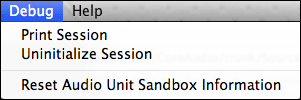
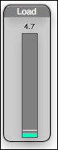
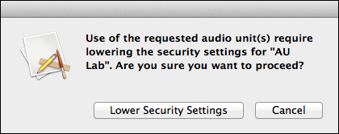

You may launch AU Lab from the terminal with a file argument:
cd AU\ Lab.app/Contents/MacOS/ ./AU\Lab -f /Users/michael/Documents/MyDoc.trak
AU Lab has a number of features specifically for developers to assist them in developing their Audio Units. These features appear in the Debug menu of the application. These menu items are as follows:
Print Session: Prints debugging information about the state of the AU Lab application. As mentioned in the Filing Bugs section below, this information is useful to send along with your bug report if you believe that you have found a problem in the AU Lab application.
Uninitialize Session/Initialize Session: This will stop the engine and uninitialize all Audio Units in the document. Conversely, Initialize Session will re-initialize all Audio Units. This menu item is useful for debugging problems with initialization in your Audio Unit code.
Reset Audio Unit Sandbox Information: Clears the cached information about Audio Units and the Sandbox state. Any attempts by any Audio Unit host to open a non-sandbox safe AU will result in an alert. This alert will prompt the user to allow opening the Audio Unit and drop the sandbox, or deny the open. See the Sandbox section below for more details.
AU Lab has a CPU load meter that indicates how much CPU load the audio units in your document are using. This is more accurate than using top because it only measures the load from the audio units and not the AU Lab application itself.
As the image to the right shows, the meter shows a green portion which is the average load and a white bar which is the peak load. The higher the bar is, the more CPU the Audio Units in the document are using. The numerical value above the meter shows the cpu usage as a percentage.
Keep in mind that even if overall cpu usage is low, Audio Overloads can still be triggered if your audio unit is trying to do more work than can be completed in its IOProc. See managing latency for more information.
Note that each document can have its own load meter. To access the CPU Load Meter, choose Show CPU Load from the Window menu.
AU Lab now runs in an App Sandbox. It can load all Sandbox-safe or non-Sandbox-safe Audio Units.
When an Audio Unit that is not sandbox safe is loaded for the first time, the system presents a dialog alerting the user that the security settings need to be lowered in order to use the selected Audio Unit. Once the user has elected to lower the security settings, this dialog will not reappear for that specific Audio Unit opening in that specific host.
You can reset the stored sandbox information by choosing Reset Audio Unit Sandbox Information from the Debug menu.
The Sandbox version of AU Lab behaves the same as the previous non-sandboxed version with a few minor differences.
We encourage you to file any bugs that you may find in AU Lab. Make sure you include a copy of your AudioUnit if the bug is specific to your unit, and also include a snapshot of the Engine State. You can get this information by going to the Debug menu and choosing Print Session. This will output debugging information to the console. Including this information will help us fix your problem.
We would love your feedback and comments in order to help make AU Lab a better product.
A special thanks to all those Audio Unit developers out there who have given us so much inspiration!
Thank you!
AU Lab and CoreAudio Engineering
2.0.1
2.1
2.2
2.3